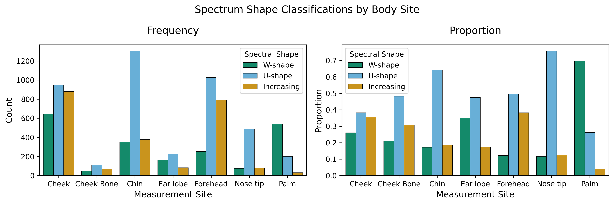
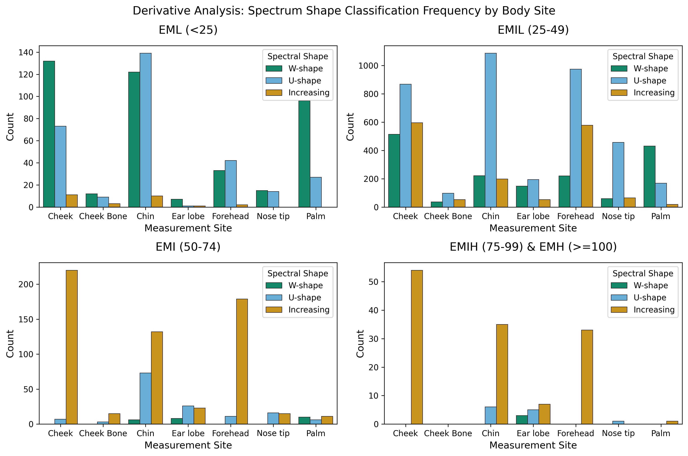
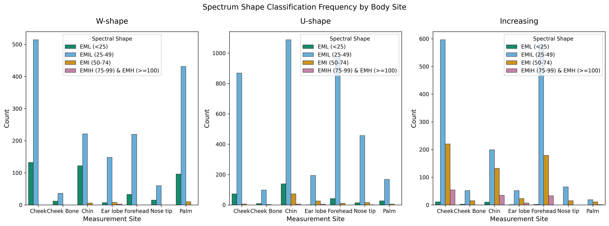
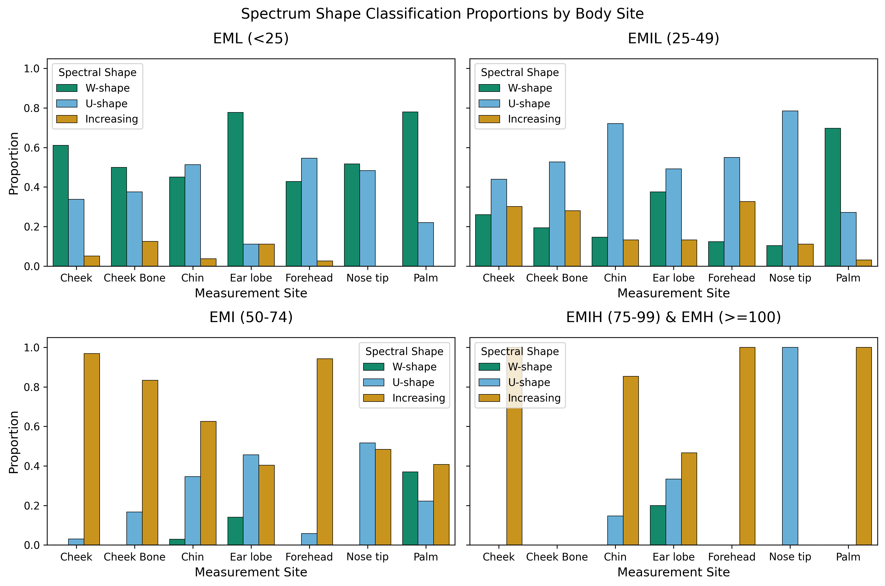
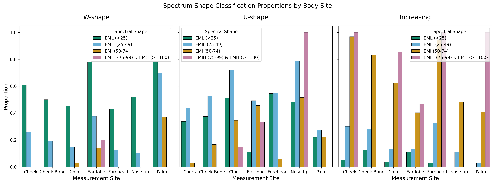
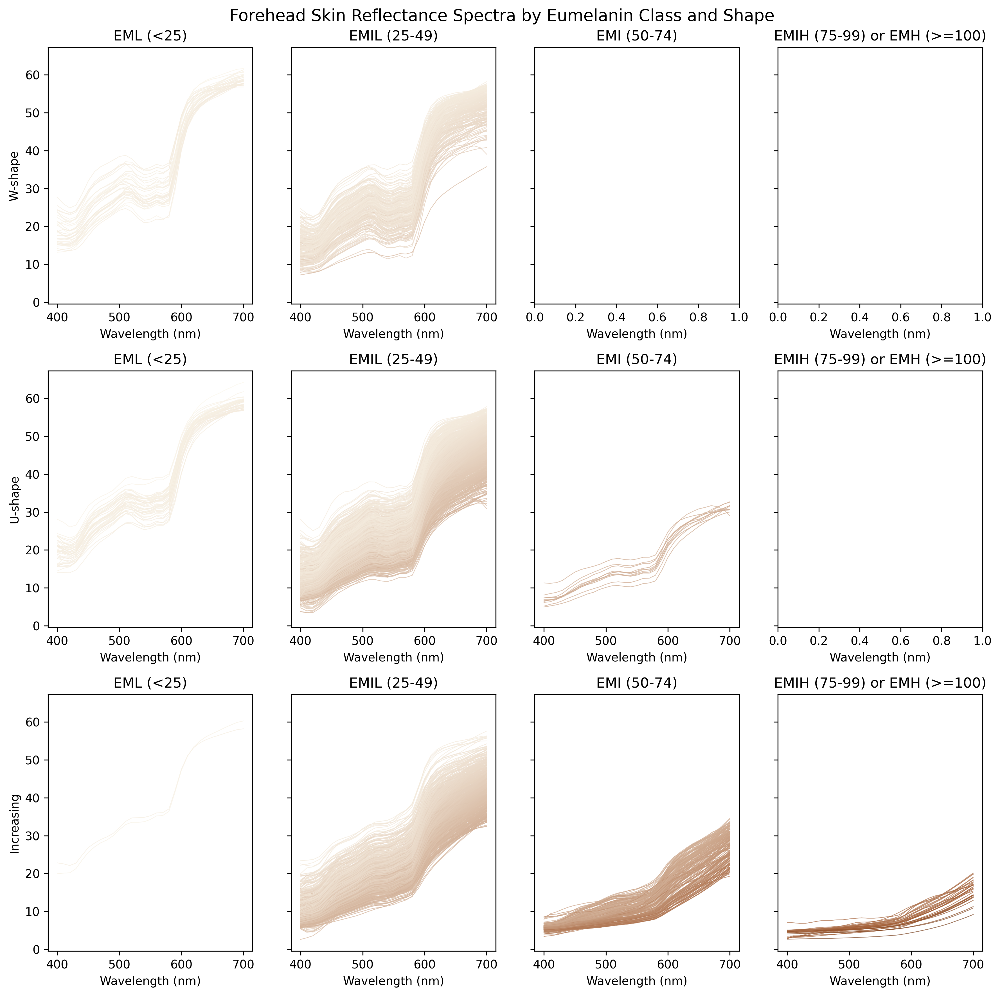
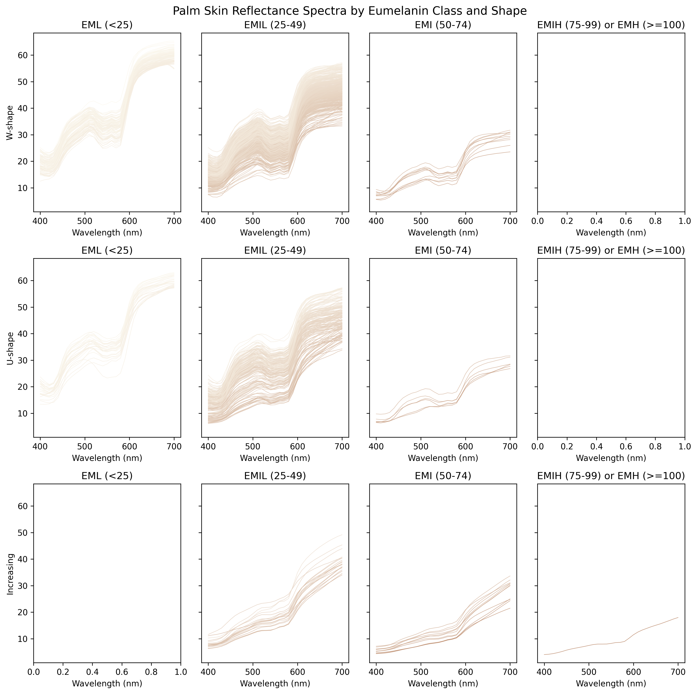
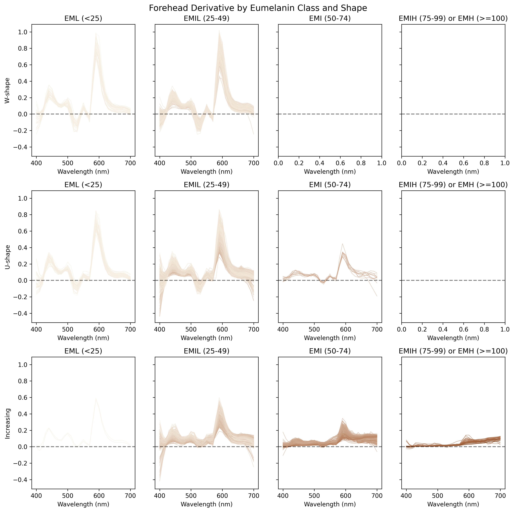
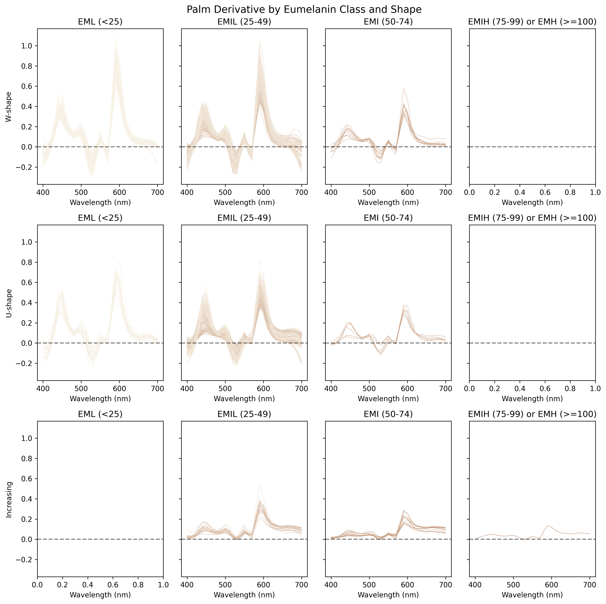

| Eumelanin Class | EML (<25) | EMIL (25-49) | EMI (50-74) | EMIH (75-99) | EMH (>=100) |
|---|---|---|---|---|---|
| Site | |||||
| Cheek | 216 | 1978 | 227 | 50 | 4 |
| Cheek Bone | 24 | 186 | 18 | 0 | 0 |
| Chin | 271 | 1507 | 211 | 36 | 5 |
| Ear lobe | 9 | 394 | 57 | 12 | 3 |
| Forehead | 77 | 1772 | 190 | 30 | 3 |
| Nose tip | 29 | 582 | 31 | 1 | 0 |
| Palm | 123 | 618 | 27 | 1 | 0 |
| Total | 749 | 7037 | 761 | 130 | 15 |
Shape Analysis of Skin Reflectance Spectra
1 Overview of ISSA face and palm sites
ISSA Face and Palm Sites Eumelanin Class Summary Table:
2 Derivative-based Shape Analysis
We can classify spectral shapes based on the first derivative of skin reflectance. Within the 500–600 nm wavelength range, we apply the following criteria:
Monotonically Increasing: The first derivative remains positive.
U-shape: The derivative exhibits exactly one zero-crossing from negative to positive, indicating a single valley.
W-shape: The derivative exhibits two zero-crossings from negative to positive, indicating two distinct valleys.
2.1 Frequency and proportion tables
Frequency table of shape classifications for face and palm sites:
| Shape | W-shape | U-shape | Increasing |
|---|---|---|---|
| Site | |||
| Cheek | 646 | 948 | 881 |
| Cheek Bone | 48 | 110 | 70 |
| Chin | 349 | 1305 | 376 |
| Ear lobe | 166 | 226 | 83 |
| Forehead | 253 | 1027 | 792 |
| Nose tip | 75 | 488 | 80 |
| Palm | 537 | 201 | 31 |
Frequency table of shape classifications for face and palm sites by eumelanin class:
| Shape | W-shape | U-shape | Increasing | |
|---|---|---|---|---|
| Site | Eumelanin Class | |||
| Cheek | EML (<25) | 132 | 73 | 11 |
| EMIL (25-49) | 514 | 868 | 596 | |
| EMI (50-74) | 0 | 7 | 220 | |
| EMIH (75-99) & EMH (>=100) | 0 | 0 | 54 | |
| Cheek Bone | EML (<25) | 12 | 9 | 3 |
| EMIL (25-49) | 36 | 98 | 52 | |
| EMI (50-74) | 0 | 3 | 15 | |
| Chin | EML (<25) | 122 | 139 | 10 |
| EMIL (25-49) | 221 | 1087 | 199 | |
| EMI (50-74) | 6 | 73 | 132 | |
| EMIH (75-99) & EMH (>=100) | 0 | 6 | 35 | |
| Ear lobe | EML (<25) | 7 | 1 | 1 |
| EMIL (25-49) | 148 | 194 | 52 | |
| EMI (50-74) | 8 | 26 | 23 | |
| EMIH (75-99) & EMH (>=100) | 3 | 5 | 7 | |
| Forehead | EML (<25) | 33 | 42 | 2 |
| EMIL (25-49) | 220 | 974 | 578 | |
| EMI (50-74) | 0 | 11 | 179 | |
| EMIH (75-99) & EMH (>=100) | 0 | 0 | 33 | |
| Nose tip | EML (<25) | 15 | 14 | 0 |
| EMIL (25-49) | 60 | 457 | 65 | |
| EMI (50-74) | 0 | 16 | 15 | |
| EMIH (75-99) & EMH (>=100) | 0 | 1 | 0 | |
| Palm | EML (<25) | 96 | 27 | 0 |
| EMIL (25-49) | 431 | 168 | 19 | |
| EMI (50-74) | 10 | 6 | 11 | |
| EMIH (75-99) & EMH (>=100) | 0 | 0 | 1 |
Proportion table of shape classifications for face and palm sites:
| Shape | W-shape | U-shape | Increasing |
|---|---|---|---|
| Site | |||
| Cheek | 0.261 | 0.383 | 0.356 |
| Cheek Bone | 0.211 | 0.482 | 0.307 |
| Chin | 0.172 | 0.643 | 0.185 |
| Ear lobe | 0.349 | 0.476 | 0.175 |
| Forehead | 0.122 | 0.496 | 0.382 |
| Nose tip | 0.117 | 0.759 | 0.124 |
| Palm | 0.698 | 0.261 | 0.040 |
Proportion table of shape classifications for face and palm sites by eumelanin class:
| Shape | W-shape | U-shape | Increasing | Total Samples | |
|---|---|---|---|---|---|
| Site | Eumelanin Class | ||||
| Cheek | EML (<25) | 0.611 | 0.338 | 0.051 | 216 |
| EMIL (25-49) | 0.260 | 0.439 | 0.301 | 1978 | |
| EMI (50-74) | 0.000 | 0.031 | 0.969 | 227 | |
| EMIH (75-99) & EMH (>=100) | 0.000 | 0.000 | 1.000 | 54 | |
| Cheek Bone | EML (<25) | 0.500 | 0.375 | 0.125 | 24 |
| EMIL (25-49) | 0.194 | 0.527 | 0.280 | 186 | |
| EMI (50-74) | 0.000 | 0.167 | 0.833 | 18 | |
| Chin | EML (<25) | 0.450 | 0.513 | 0.037 | 271 |
| EMIL (25-49) | 0.147 | 0.721 | 0.132 | 1507 | |
| EMI (50-74) | 0.028 | 0.346 | 0.626 | 211 | |
| EMIH (75-99) & EMH (>=100) | 0.000 | 0.146 | 0.854 | 41 | |
| Ear lobe | EML (<25) | 0.778 | 0.111 | 0.111 | 9 |
| EMIL (25-49) | 0.376 | 0.492 | 0.132 | 394 | |
| EMI (50-74) | 0.140 | 0.456 | 0.404 | 57 | |
| EMIH (75-99) & EMH (>=100) | 0.200 | 0.333 | 0.467 | 15 | |
| Forehead | EML (<25) | 0.429 | 0.545 | 0.026 | 77 |
| EMIL (25-49) | 0.124 | 0.550 | 0.326 | 1772 | |
| EMI (50-74) | 0.000 | 0.058 | 0.942 | 190 | |
| EMIH (75-99) & EMH (>=100) | 0.000 | 0.000 | 1.000 | 33 | |
| Nose tip | EML (<25) | 0.517 | 0.483 | 0.000 | 29 |
| EMIL (25-49) | 0.103 | 0.785 | 0.112 | 582 | |
| EMI (50-74) | 0.000 | 0.516 | 0.484 | 31 | |
| EMIH (75-99) & EMH (>=100) | 0.000 | 1.000 | 0.000 | 1 | |
| Palm | EML (<25) | 0.780 | 0.220 | 0.000 | 123 |
| EMIL (25-49) | 0.697 | 0.272 | 0.031 | 618 | |
| EMI (50-74) | 0.370 | 0.222 | 0.407 | 27 | |
| EMIH (75-99) & EMH (>=100) | 0.000 | 0.000 | 1.000 | 1 |
2.2 Frequency and Proportion figures





2.3 Skin reflectance spectra on forehead and palm


2.4 First derivative on forehead and palm


2.5 Key observations
The skin reflectance spectra of lighter skin tones predominantly exhibit a W-shape or U-shape profile, whereas darker skin tones generally display an increasing shape.
The proportion of the W-shape decreases as the Melanin Index (MI) rises. In contrast, the proportion of the U-shape peaks within the EMIL class (\(25 \leq \mathrm{MI} < 50\)), and the increasing shape becomes more dominant at higher MI values.
Spectral shape distributions vary significantly across different body sites.